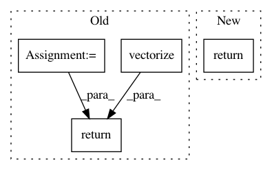

fa1baf601959e2add7f333540247f85ba5d921fc,geomstats/_backend/numpy/linalg.py,,logm,#Any#,71
Before Change
eigvals, eigvecs = np.linalg.eigh(new_x)
if (eigvals > 0).all():
eigvals = np.log(eigvals)
eigvals = np.vectorize(np.diag, signature="(n)->(n,n)")(eigvals)
transp_eigvecs = np.transpose(eigvecs, axes=(0, 2, 1))
result = np.matmul(eigvecs, eigvals)
result = np.matmul(result, transp_eigvecs)
else:
result = np.vectorize(scipy.linalg.logm,
signature="(n,m)->(n,m)")(new_x)
else:
result = np.vectorize(scipy.linalg.logm,
signature="(n,m)->(n,m)")(new_x)
if ndim == 2:
return result[0]
return result
def powerm(x, power):
ndim = x.ndim
After Change
def logm(x):
return np.vectorize(
asp.logm, signature="(n,m)->(n,m)")(x)
def solve_sylvester(a, b, q):
if a.shape == b.shape:
In pattern: SUPERPATTERN
Frequency: 3
Non-data size: 4
Instances
Project Name: geomstats/geomstats
Commit Name: fa1baf601959e2add7f333540247f85ba5d921fc
Time: 2021-01-11
Author: nicolas.guigui@inria.fr
File Name: geomstats/_backend/numpy/linalg.py
Class Name:
Method Name: logm
Project Name: dpressel/mead-baseline
Commit Name: 8a420e8ef11ebf828e5e5b33e8a830eb74c39d6a
Time: 2020-03-09
Author: blester125@gmail.com
File Name: baseline/services.py
Class Name: ClassifierService
Method Name: predict
Project Name: geomstats/geomstats
Commit Name: 4f37de7ae874878ade9e4109f0fa323a9147d959
Time: 2020-05-10
Author: nicolas.guigui@inria.fr
File Name: geomstats/geometry/discrete_curves.py
Class Name: DiscreteCurves
Method Name: belongs